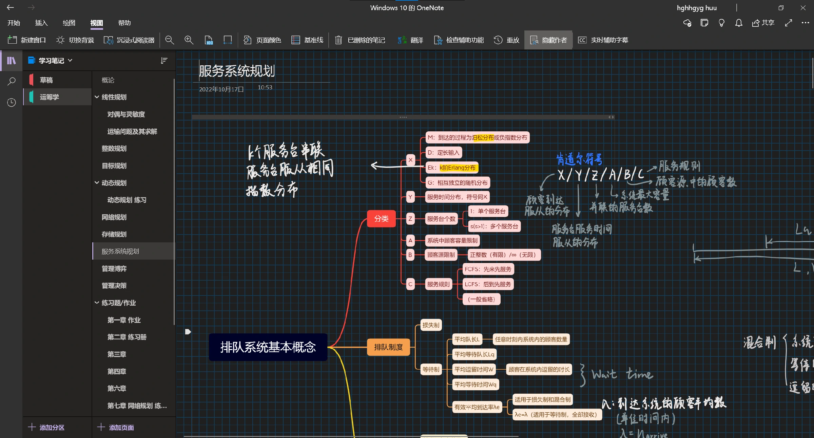
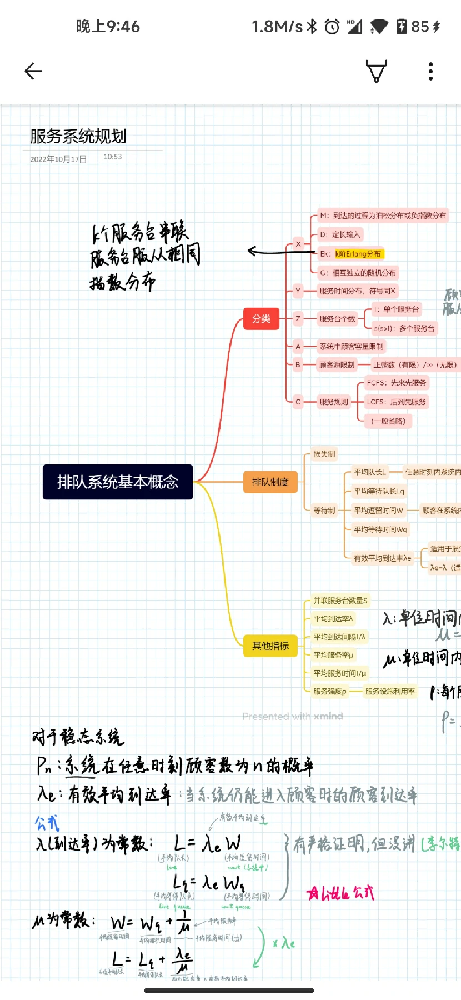
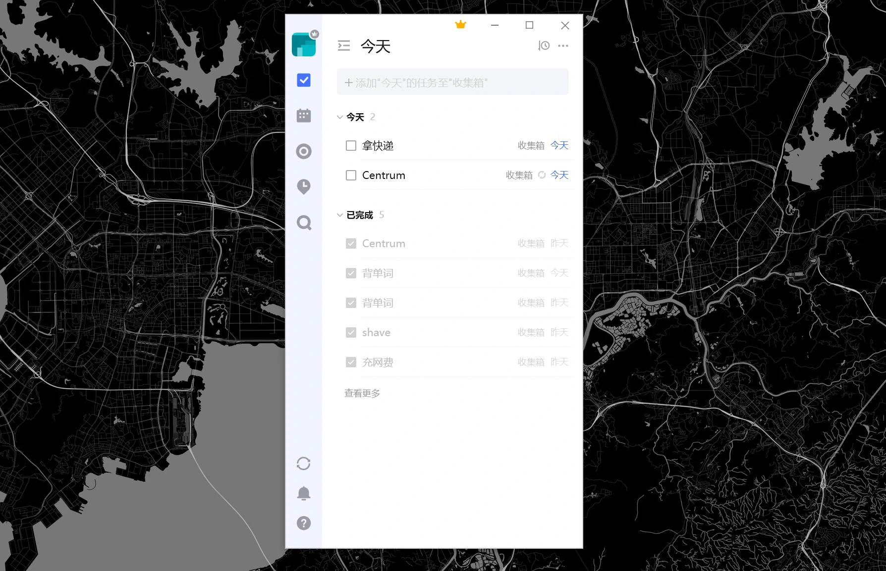
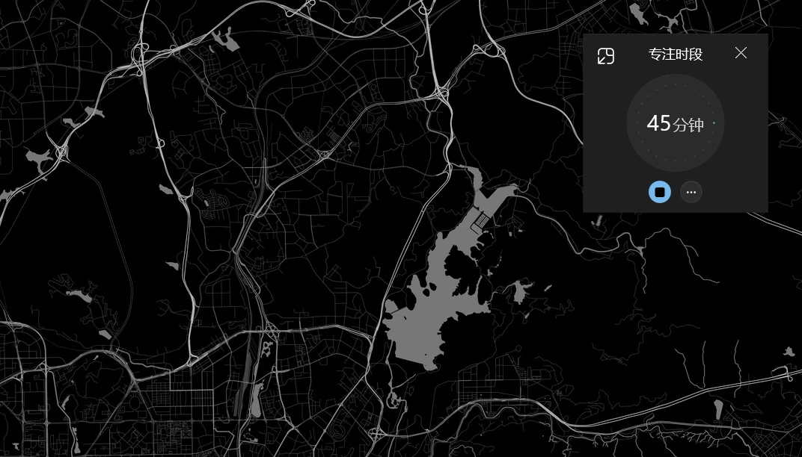
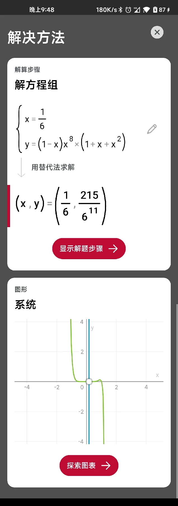
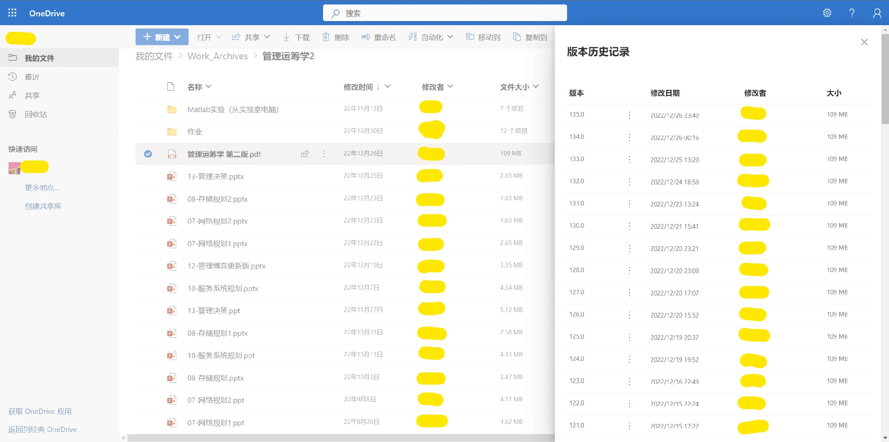
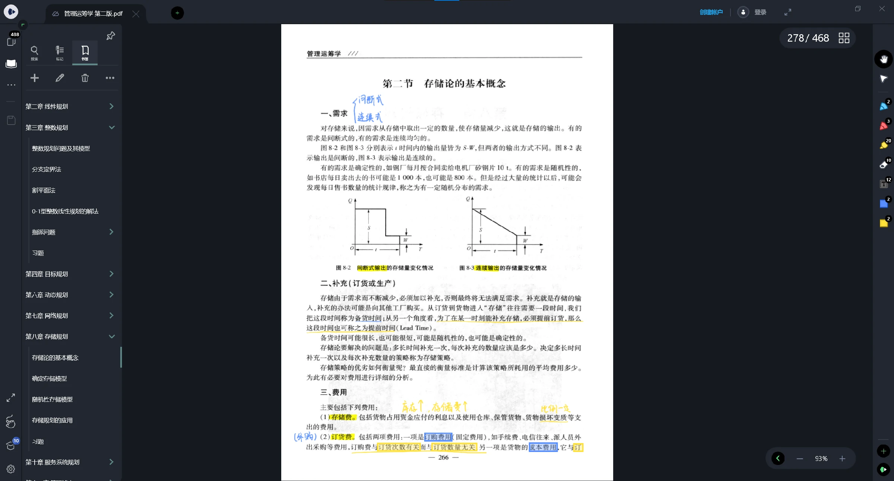
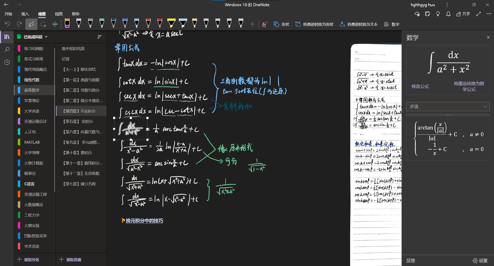
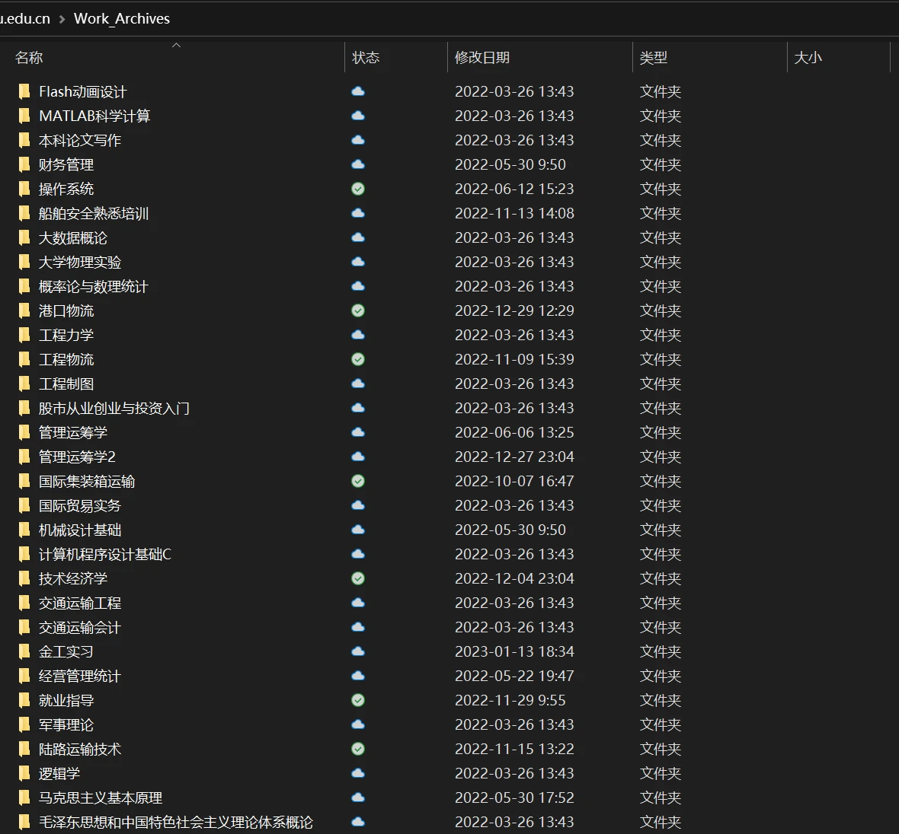

本科学习生活工作流

- huuhghhgyg
- 2 min read

写这篇文章总结的想法很早就有了，但是一直没有动笔写，也不知道应该以什么形式写下来。也就是晚上 11 点有动力和灵感写一篇这样的文章，总结一下大学两年半使用电子产品（硬件和软件）进行学习和生活的状态。探索并梳理工作流的新鲜感让我觉得很爽，这样的折腾可能也是一直促进我学习的因素之一。
而且像我这样买 Surface Pro 还用了那么久的人估计也不多，到了大学教室里面一个专业也很难见到一个用 Surface 的人，更别说我这种把它当平板用的了，就像当年的 1%🤣。因此，也顺便分享一下大学过程中随着 Windows Update 为 Windows 带来日新月异的体验（bug）后我使用 Surface 的感受。
此外，学习过程中也积累了一些比较好用的软件 🤣 我的专业是物流工程，虽然后面介绍的软件有一部分可能是计算机相关专业同学比较熟悉的软件，但并不影响使用和享受其带来的便捷。所以，虽然介绍的方向可能偏工科专业，但是我认为其实也适合很多其他专业的同学。毕竟，在如今这个时代，什么都离不开电脑、手机和云计算嘛。特别是上云这件事，有时候能减少很多麻烦。
环境
下面我介绍一下我在大学前三年中使用的 EDC（硬件）和日常生活和学习中使用到的软件。
硬件设备
按照购买时间排序：
- 平板：Surface Pro 6，高三的时候买的。升级了 Windows 11，耗电多了、速度慢了，但是 Win11 的触控优化对于 Win10 是质的飞跃。升级了 Win11 以后，随着触控键盘可以缩小尺寸等针对平板的优化，能够脱离 Surface Type Cover 使用的场景变多了。虽然很多场景还是必须要键盘鼠标，但是对于看视频看资料写写画画之类的场景确实已经能够脱离 Type Cover 了。（不过现在已经刷回 Windows 10 了）
- 手机：小米 10，资本弃舰不多说。
- 电脑：ROG 幻 15，大一下学期买的，当时正好显卡荒，本子都被挖矿的抢走了，笔记本加价都不一定能买到，拯救者被抢疯了。当时 10999 抢到 R9+16G+1T+3060 还是很幸运的。
软件
高频使用的学习软件：
-
OneNote：笔记软件，功能很丰富，我电脑、平板、手机（以下简称“全平台”）都装了，方便各种场合使用，场景包括：考试前没带平板拿手机多看两眼笔记、在上高年级课程的时候老师突然提问高数概率论相关知识，迅速查找相关笔记。电脑上主要往上面记录打字类型的笔记、平板主要往上写、手机主要在没带平板或电脑的时候看，这样就全平台任意时候都能直接参考记录下来的笔记。电脑版 OneDrive（非 OneNote for Windows10）可以将笔记保存到本地，方便进行备份，不用担心巨硬跑路。


-
Office 365 教育版：拿到学校邮箱以后立刻申请了 Office 365 教育版，拿一个 1TB 的 OneDrive 云空间，把 OneNote 笔记都记在教育版账户上。教育版账户实测下载文件能有 1Mb/s 或者更高的速度，不会出现网传的丢笔记，同步不上的问题。真有问题点多几次同步或者关掉再打开就可以了（在 OneNote for Windows10 上总说同步不上感觉是显示的问题，写几下一会就说同步上了），同步速度还可以，主要是比较稳定。
-
滴答清单：一个待办清单软件，我全平台都安装了。主要用于生活中各种琐碎待办的记录，防止事情过多忘记做某些事情。我最喜欢的点在于全平台安装后，只要手头有设备就可以添加待办。如果设置了时间提醒弹出通知也特别及时 👍（特别是在 Windows 端）

-
潮汐：白噪声软件。当室友特别吵而必须在宿舍进行学习的时候，带上降噪耳机、将白噪音声音开大，逐渐就能进入专注的状态。对于我来说，专注学习的最大障碍有时候会蹦出来很多想法，这个时候就可以结合“滴答清单”将它们记录下来，等专注时间过了以后再实现。
-
Windows 时钟：专注计时，和“潮汐”二选一使用即可。当环境不是特别嘈杂而阻碍专注的因素来自于自身的时候，可以将里面的专注时段打开并缩小悬挂于屏幕右上角，提醒自己处于专注时间以及剩余时长，合理安排时间。我一般在用 Surface 学习的时候将它挂在右上角。

-
飞书妙记：会议记录软件。飞书妙记是飞书里面的一个应用。我身边几乎没有人用飞书，但是里面飞书妙记倒是挺好用的。我的用法就是网课录屏上传视频语音转文字。
其他软件/学习软件推荐：
-
墨墨背单词：背单词软件，不多说。只要坚持就有成效。（就是坚持最难 😭）
-
VSCode：万能编辑器，对于我这种业余编辑的倒是不在乎它的大小，主要在乎它的各种编辑功能。利用快捷键实现多行编辑，免去编辑文本格式的重复性无意义劳动，也很快捷。还有，通过插件它能支持很多类型代码的高亮、格式化、Snippet 操作，对于轻度写代码也非常友好。具体可以看我博客里面的介绍 VSCode 多光标输入 | Hikaru’s Blog
-
Photomath/Geogebra：算高数的时候可以求方程、积分，算线性代数的时候可以算简单的矩阵。PhotoMath 有时候由于网络差可能进不去，可以改用 Geogebra。此外，Geogebra 支持的画图功能很强，也有网页版。但我还是比较习惯 PhotoMath。

-
PowerToys：Windows 上的工具箱，能够实现窗口置顶、屏幕常亮、快捷键静音禁摄像头等操作。如果电脑没有一键静音的快捷键，用这个也不错，至少不会在腾讯会议上社死。最近还推出了检测文件占用的功能，弹出 U 盘/硬盘的时候终于知道到底是谁在占用磁盘了 🤩

-
OBS Studio：最专业的录屏软件之一，开源软件。
学习工作流介绍
上面可能已经介绍了一些了，下面也许会有点重复，不过也会比较完整。大部分都是基于以上的硬件和软件实现的，可以看看有没有参考价值。
老师发 PPT/作业
存到 OneDrive 上对应课程的文件夹里面，以便多端同步文件版本。通常是平板编辑，电脑偶尔也编辑一下。由于存到 OneDrive 上，三个设备上都能看，这就实现了上云。
用 Word 写作业
直接在 OneDrive 上对应课程文件夹里面写。OneDrive 有版本记录功能，如果觉得写乱了可以在历史版本记录里面回滚到以前保存的版本。如果能在酷安要到一个 Office 365 E5 就可以实现文档自动保存，再也不怕电脑蓝屏作业文档没保存。其实上面说的申请教育版 Office 365 主要就是要它的 1TB OneDrive，说得夸张一点，如果写作业的时候有联网同步，就算我从外面回宿舍的时候手机掉水里灭失了也能回宿舍用电脑把作业取出来。
此外，我还见过其他同学论文写到结尾了一直都没保存，然后电脑突然蓝屏全丢的情况。如果使用了 Office 这套工作流，我认为丢文件是一个非常小概率的事件。剩下就是作业能不能写出来的问题了。
如果是写程序，IDE 创建的项目不建议放到 OneDrive 上写，因为每次编译生成软件都会有文件变化，而这些文件的各个版本都会被 OneDrive 上传占用的存储空间。但是单个脚本文件的源代码还是可以放进去的，看个人习惯。

嘈杂的环境学习
戴上降噪耳机，打开潮汐，设定一个合理的专注时长。先将白噪音音量调大直到盖过噪音尝试专注，当进入状态后可以适当减小白噪音音量。如果尝试专注 15 分钟后仍然无法专注，那你可能真的需要换一个环境学习。
浮躁的状态学习
打开 Windows 计时器/潮汐，设定专注时间。如果在 Windows 上建议将计时移到窗口右上角。我感觉浮躁的状态下听或者不听音乐/白噪音会有很大的区别，每次的需求可能都不一样，当发现听音乐/白噪音无法让你进入状态时可以把音乐停掉试试。我认为最重要的是要注意休息。
网课录屏
这是最薄纱的复习手段 🤪。打开 OBS 录屏，建议码率控制在一个适当的范围内，便于备份和上传。因为网课一般都是老师播 PPT，所录课的码率一般不用很高也能看清楚。等有需要的时候或者期末把所有课程都上传到飞书妙记可以辅助复习。复习的时候如果有不懂的地方可以搜索录屏的语音转文本内容重播，比普通录屏回放的效率更高。
对于某些垃圾老师上的网课，你坐在那上一个半小时的课感觉就是在浪费时间。这个时候你就可以将录屏传上去，花 15~20 分钟的时间看一下转出来的文字看看他讲了啥，大幅节约你的生命，提高效率。
线下上课可以打开手机录音代替
上课笔记
我一般直接用 Drawboard PDF 记在电子课本或者老师发的 PPT 上，回头整理。

整理笔记
OneNote。好处在于 OneNote 的纸可以无限扩大，不用担心笔记的排版问题。需要补充的时候可以用自带的工具直接拉一片空间出来，或直接拉个箭头到别的地方继续补充，自由度很高。学数学的时候，可以充分利用里面的“数学”模块，它可以计算微积分、解方程、画图等，做练习的时候不确定的答案可以用它算一遍验证一下。 这里吹一下 Surface Pen，设置好快捷键以后按一下后面的按钮可以截屏，直接用笔把 PPT 上的内容截下来，粘贴到 OneNote 上即可。很方便，谁用谁知道。

保存 PPT
老师传到微信群里的文件不会一直在那里，微信并不可靠，总是在你需要那份文件的时候提醒你文件已过期。当老师每次发了什么 PPT 和作业，可以一股脑全部塞到 OneDrive 上。别人问你要过期 PPT 的时候就可以积累一下人缘 🤣
我一般每个学期结束的时候会将相关课程的文件夹移到 OneDrive 上的其他文件夹，高年级的时候它们可能会有用。

找资料
Edge 的集锦挺好用的。看到什么相关的网页可以新建一个集锦往里面塞，等不需要了可以整个删掉。手机上我也装了 Edge，账号密码什么的无墙同步很爽，而且通过 Edge 网页可以发到指定设备上继续看，一打开那台设备他就会弹出提示框。
建议大学期间逐渐积累一下浏览器的收藏夹
生活
南方同学/记忆力差的同学去澡堂洗澡建议
生活方面嘛，我高中也没住过校，突然就住校了，我一个南方人也没洗过澡堂，给没住过校的同学也带点经验 🤣
在手机备忘录上建立一个洗澡物品清单，去洗澡前一项项确认，确保没有遗漏物品。原因嘛，首先，如果宿舍和澡堂距离比较远，一来一回要的时间还是挺可观的；其次，对于南方同学来说，考你们一下：如果冬天你去澡堂洗澡，洗到一半发现没带毛巾你会怎么做？不管怎么样，澡堂有设置通风口，我只知道天气还是挺冷的 😂
出门
摸一下口袋里有没有纸巾、饭卡、手机。手机里有 OneDrive 和 OneNote，相当于带上了你所有的学习资料，随时随地只要有网都能看。
其他吐槽
我用的这台 Surface Pro 6 什么都好，就是充电很令人难受。充电的时候触摸屏经常断触失灵，包括笔也是经常光标漂移，或者写不出字。这属于硬件缺陷，不知道后代版本有没有这个问题。满电状态下会好一点，但是毕竟还是充电的时候多。如果后代型号还有类似问题，我认为这是最劝退的点。由于我这台丐版 SP6 没有风扇，充电发热的时候会严重影响手写笔笔迹，造成手指可数的延迟…但是后代版本好像都配备风扇了。
小米 10 机器本身硬件还是很好的，但我觉得到现在就没有出过一个称心如意的 MIUI 版本，刷过很多版本最好的就是 12.5.6 和 12.0.11。现在解锁 Root 打算强行苟到毕业，云控逼我换机不可能的，要么就换别家的。
微软的软件总要在手机上登录，要么就要挂 Authenticator 的后台，增加耗电。